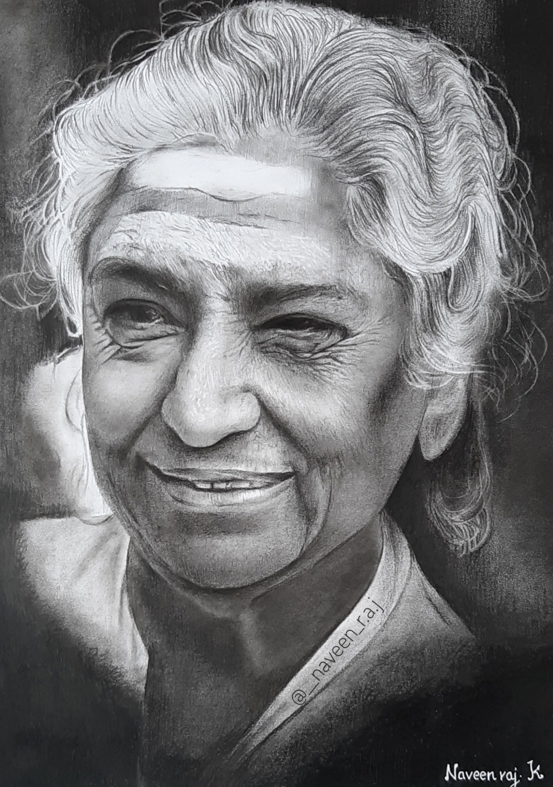

Dhee - Playback singer
She hit the big time with her debut single" Enjoy enjaami" and inspired many young independent music artists to make music in bigger platforms. Dhee's fashion sense in the music video and photoshoots inspired me draw a mini sketch of her with graphite!.
Naveen raj - Self portrait
Graphite and charcoal Sketch .
Samantha Ruth Prabhu - Indian actress
Graphite drawing of charming Samantha on a medium surface sheet.The mild rough surface is perfect for blending and gives a natural finish look.
Anirudh Ravichander - Music composer
Anirudh is as one of the most popular composers in South India.I drew this realistic sketch of him with graphite and charcoal. This is one of my favorite drawings I've done. Anirudh reshared my drawing in his Instagram story too.
Beyoncé Giselle Knowles - American singer
One of the challenging pictures I've drawn. I created this graphite and charcoal drawing on occasion of 18th Anniversary of Beyoncé's debut album "Dangerously In Love".
Suriya sivakumar - Indian actor
One of my favorite look of Suriya in recent times. The actor inspires many youngsters with his quality movies which holds important social message. This is a realistic graphite and charcoal drawing of him and is close to my heart!.

S .Janaki Amma - Playback singer
Respectfully referred to as "Janaki Amma" ,the legend singer has sung over thousands of songs in 17 languages worldwide for the past 6 decades. She is my dad's favorite. I did this realistic pencil drawing with charcoal and graphite as a small tribute to her.
Heroic Tiger - portrait
I decided to work on this picture to learn about the complicated fur of animals. Each and every part of this pictures includes different techniques. This drawing is completely done with charcoal which I never done before. In this picture, I mostly used all the techniques and skills I learnt so far.
Male body - Anatomy study
Small drawing of an anonymous man's back .
Teary
Tears is way of communication and can evoke strong emotions in the people who witness them. A quick and a small sketch of a crying eyes with pencils!.
Rose - realistic drawing
Rose symbolizes love, beauty, gratitude,grace, joy ,courage. The petals of a rose is not aligned in a pattern or it doesn't have a specific shape,but still it is considered to be the most beautiful flower in the planet.Like wise we need not be perfect to be attractive. Our gratitude, grace,actions decides our beauty.
Lonesome
Solitude is the place of purification. "I like to pretend that my art has nothing to do with me".
{kind=link}
{kind=link}
{kind=link}
{kind=link}
{kind=link}
{kind=link}
{kind=link}
{kind=link}
{kind=link}
{kind=link}
{kind=link}
{kind=link}